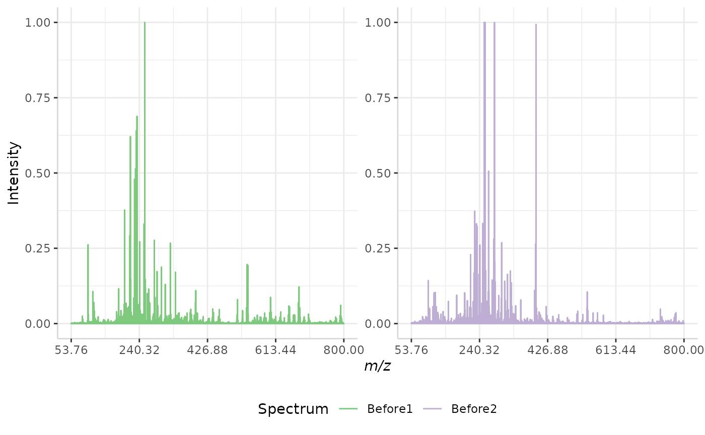
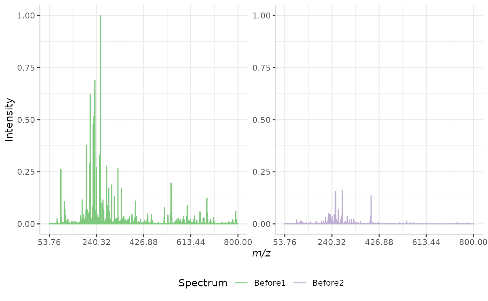
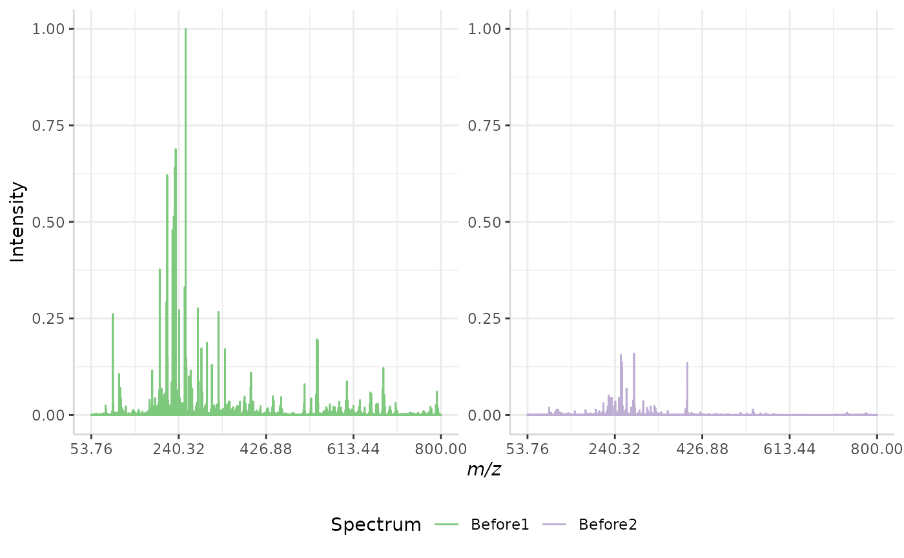
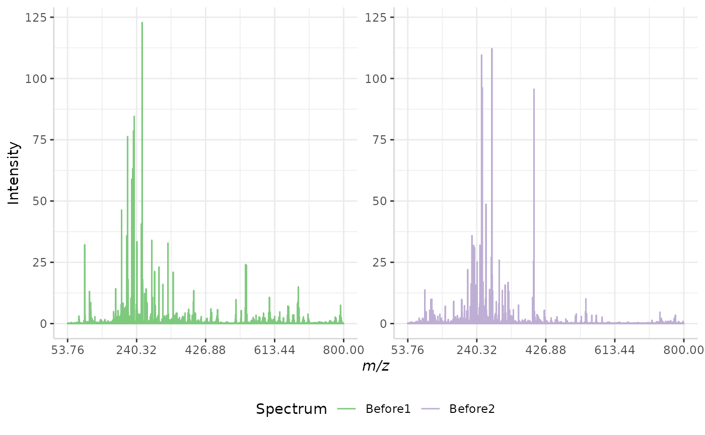
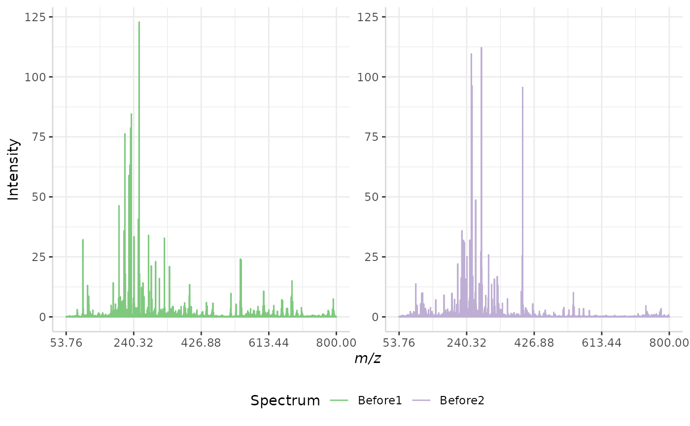
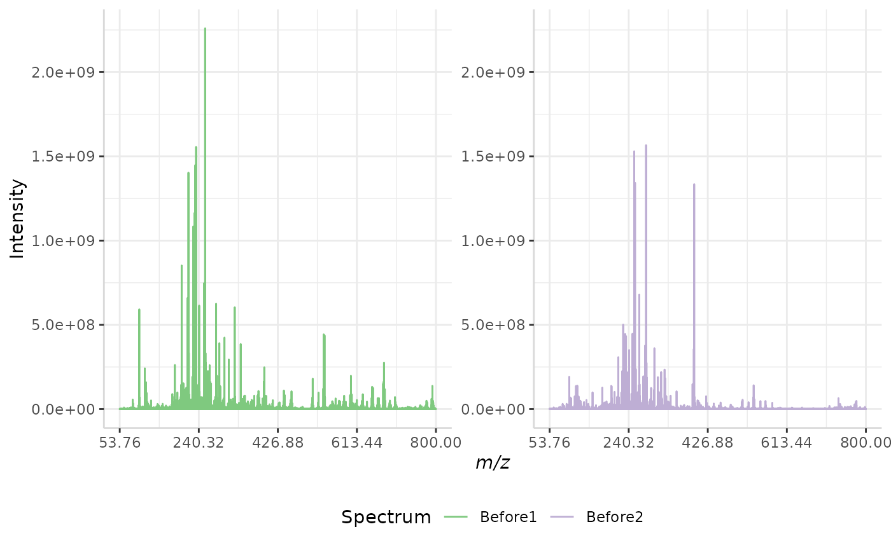
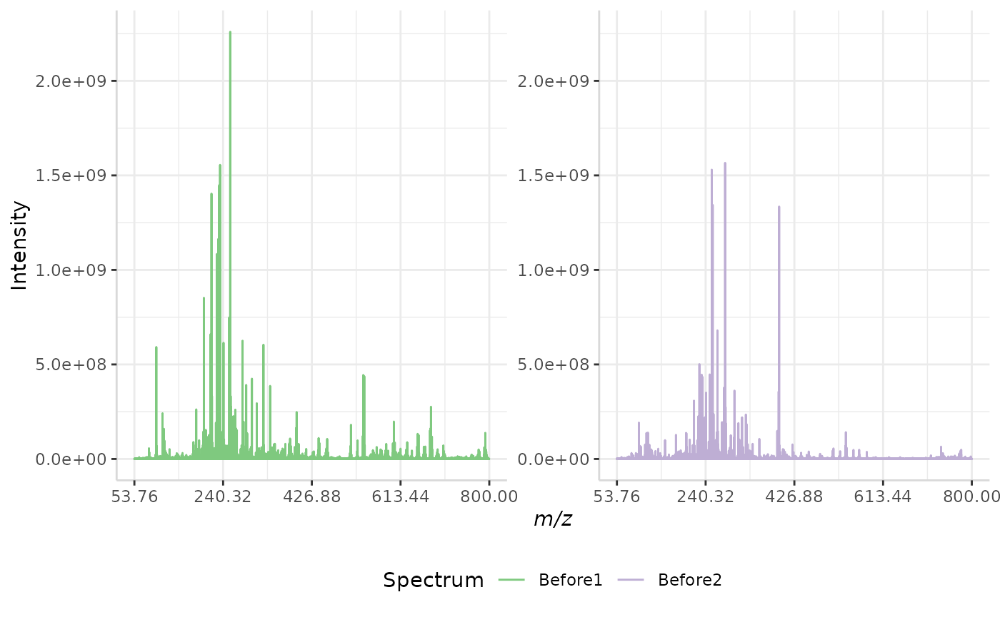
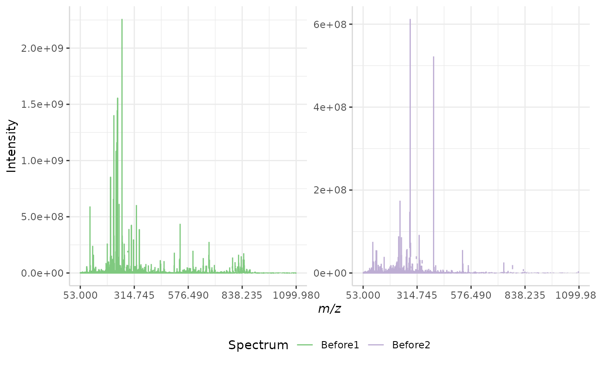
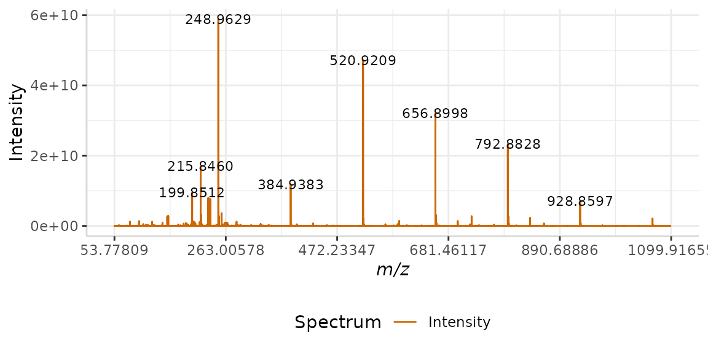

subMALDI: Sample Workflow
Kristen Yeh1, Sophie Castel2 and Wesley Burr 3
subMALDI_workflow.Rmd1 Forensic Science Program, Trent University, Peterborough, ON, Canada
2 Faculty of Science, Applied Bioscience, Ontario Tech University, Oshawa, ON, Canada
3 Faculty of Science, Mathematics, Trent University, Peterborough, ON, Canada
Introduction
In this vignette we demonstrate a processing workflow for irregularly-spaced mass spectrometry data using subMALDI. This package is freely available from GitHub and was created using MALDI FT-ICR mass spectrometry data.
Installation and Import
Installation
To download the package, select the ‘.tar.gz’ file from the git repository. This file can then used to install the package in R. Below, we load the package and its dependencies.
library(subMALDI)
#> Loading required package: dplyr
#>
#> Attaching package: 'dplyr'
#> The following objects are masked from 'package:stats':
#>
#> filter, lag
#> The following objects are masked from 'package:base':
#>
#> intersect, setdiff, setequal, union
#> Loading required package: tidyr
#> Loading required package: ggplot2
#> Loading required package: ggpmisc
#>
#> Attaching package: 'ggpmisc'
#> The following object is masked from 'package:ggplot2':
#>
#> annotate
#> Loading required package: reshape2
#>
#> Attaching package: 'reshape2'
#> The following object is masked from 'package:tidyr':
#>
#> smiths
#> Loading required package: RColorBrewer
#> Warning: replacing previous import 'ggplot2::annotate' by 'ggpmisc::annotate'
#> when loading 'subMALDI'
#> Warning: replacing previous import 'dplyr::filter' by 'signal::filter' when
#> loading 'subMALDI'Import
Two import functions are included in the package. Both read .CSV files which contain spectral data from a single spectrum per file. While readcsvSpec() imports one spectrum at a time and turns them into a pairwise data frame of m/z and intensity data, readcsvDir() is capable of reading all the .CSV files in a folder. The pairwise data frames generated for all of these spectra are then output as .rda files into a designated output folder.
For example, let’s say we have a set of 5 spectral replicates in our working directory. These are stored as .CSV files in a folder called “my_spec”. In the original file, mass data is stored in a column called “m.z”, while intensity data is stored in a column called “I”. If we wanted to import only one of the spectra, specifically “Sample1.csv”, then we would run the following code.
my_spec1 <- readcsvSpec(spec_file = "~/my_spec/Sample1.csv", massCol = "m.z", intenseCol = "I")Conversely, if we wanted to import all spectra in the folder “my_spec” into a new folder called “out”, we would run the following.
readcsvDir(direct = "~/my_spec/", massCol = "m.z", intenseCol = "I", output = "~/my_spec/out/")
load("~/my_spec/out/Sample1.rda")This will create a pairwise data frame of m/z and intensity data, much like the one shown below.
data("Blank1")
head(Blank1)
#> mass Intensity
#> m.z1 53.77809 1189673
#> m.z2 53.78582 1296961
#> m.z3 53.79091 1329388
#> m.z4 53.80821 1256587
#> m.z5 53.82150 1190686
#> m.z6 53.82591 1247174Reading in an ASCII File
The mass spectrometer may produce raw output data in format. In this case, the function can be used to read in the data file and convert it to a object. Simply specify the filepath, as shown below:
# spec_data <- read_ascii(filename = "~/filename.ascii")Once loaded into the global environment, the object can be saved to the local directory as a file using the function:
# write.csv(spec_data, file = "~/filename.csv")Creating a Mapped Data Frame
In order to compare unevenly spaced spectral data, it is essential that the spectra be standardized by some means. When performing R analysis, replicates must be aligned against the same data structure, requiring that each spectrum has a consistent number of data points.
Create an Empty Data Frame
subMALDI permits the comparison of unevenly spaced mass spectrometry data by mapping each peak in a spectrum to all of the theoretically possible m/z values in the analyzed mass range.
First, an empty data frame containing all of the theoretically possible m/z values is created. As the sample data sets included with this package were acquired between the mass range of m/z 53.76 to 1100 with a resolution of four decimal places, the empty data frame we create will be customized for this data. This is performed using the following code.
spec_df <- createSpecDF(min_mz = 53.76, max_mz = 1100, res = 1e-04, dig = 4)
head(spec_df)
#> full_mz Sample
#> 1 53.7600 0
#> 2 53.7601 0
#> 3 53.7602 0
#> 4 53.7603 0
#> 5 53.7604 0
#> 6 53.7605 0We have created a long data frame containing m/z data in the first column. This data frame can now be manipulated with dplyr’s select() function to create columns specific to our spectral data.
We will add 4 columns of sample data, corresponding to 2 matrix blanks and 2 sample spectra.
spec_df <- select(spec_df, "full_mz")
spec_df <- transform(spec_df, "Blank1" = 0, "Blank2" = 0, "Before1" = 0, "Before2" = 0)
head(spec_df)
#> full_mz Blank1 Blank2 Before1 Before2
#> 1 53.7600 0 0 0 0
#> 2 53.7601 0 0 0 0
#> 3 53.7602 0 0 0 0
#> 4 53.7603 0 0 0 0
#> 5 53.7604 0 0 0 0
#> 6 53.7605 0 0 0 0Once the data frame is customized for our sample data, each spectrum can now be mapped to its respective column.
Map Spectral Data to Empty Data Frame
Before any spectra are mapped to our data frame, the spectral data must be loaded. The pairwise spectra included with the package are loaded below.
Now that the pairwise spectra have been loaded, we can map them to our empty data frame. It is important to note that the thresh and dig values must match the res and dig values used in createSpecDF(), otherwise data will fail to map.
spec_df <- mapSpectrum(dat = Blank1, massCol = "mass", intenseCol = "Intensity",
spec_df = spec_df, colName = "Blank1", thresh = 1e-04, dig = 4)
spec_df <- mapSpectrum(dat = Blank2, massCol = "mass", intenseCol = "Intensity",
spec_df = spec_df, colName = "Blank2", thresh = 1e-04, dig = 4)
spec_df <- mapSpectrum(dat = Before1, massCol = "mass", intenseCol = "Intensity",
spec_df = spec_df, colName = "Before1", thresh = 1e-04, dig = 4)
spec_df <- mapSpectrum(dat = Before2, massCol = "mass", intenseCol = "Intensity",
spec_df = spec_df, colName = "Before2", thresh = 1e-04, dig = 4)
head(spec_df)
#> full_mz Blank1 Blank2 Before1 Before2
#> 1 53.7600 0 0 0 0
#> 2 53.7601 0 0 0 0
#> 3 53.7602 0 0 0 0
#> 4 53.7603 0 0 0 0
#> 5 53.7604 0 0 0 0
#> 6 53.7605 0 1121123 669511 0Remove Empty Rows
From the output above, we can see there are several rows which contain only zero intensity values. The data frame is 10462401 rows long, and should be reduced in size to minimize the computational load of further processing functions.
It is important to note that ALL samples or spectral replicates to be compared must be mapped to the data frame prior to removal of empty rows, as new samples cannot be mapped after the original mapping m/z vector has been truncated.
Empty rows are removed from our mapped spectral data frame below.
spec <- rmveEmpty(spec_df)
head(spec)
#> full_mz Blank1 Blank2 Before1 Before2
#> 6 53.7605 0 1121123 669511 0
#> 7 53.7606 0 926236 0 0
#> 8 53.7607 0 0 846871 0
#> 9 53.7608 0 683309 692057 0
#> 10 53.7609 0 613175 793328 0
#> 11 53.7610 0 0 834638 695440
nrow(spec)
#> [1] 820893The number of rows has been reduced by 9641508. We can now proceed with further processing.
Manipulate Raw Data
In our spectral data frame we have three sets of spectral replicates: 2 matrix blanks, 2 sample spectra acquired prior to chemical intervention, and 2 sample spectra acquired after chemical intervention.
To distinguish between peaks originating from the matrix and peaks originating from the sample, we will average our matrix blank spectra, and then subtract the average blank spectrum from each sample.
Average Intensity Data
There are two methods available for averaging our intensity data: sum or mean. In this example we will use the method “mean” on the matrix blanks “Blank1” and “Blank2”. This is performed using the code below.
avg_spec <- avgSpectra(spec, method = "mean", spectra_cols = c("Blank1", "Blank2"))
head(avg_spec)
#> mz full_mz Blank1 Blank2 Before1 Before2 Average
#> 6 53.7605 53.7605 0 1121123 669511 0 560561.5
#> 7 53.7606 53.7606 0 926236 0 0 463118.0
#> 8 53.7607 53.7607 0 0 846871 0 0.0
#> 9 53.7608 53.7608 0 683309 692057 0 341654.5
#> 10 53.7609 53.7609 0 613175 793328 0 306587.5
#> 11 53.7610 53.7610 0 0 834638 695440 0.0A new column has now been added to our original data frame, containing the averaged blank intensity data. Now that the data has been averaged, we can subtract our blank spectrum from each sample.
Subtract Intensity Data
We will subtract our averaged matrix blank from samples “Before1” and “Before2” below. First, we will restructure our data frame to remove the matrix blank columns, whose intensity data is now contained in the “Average” column. Next, we will add new columns to the data frame for the new subtracted intensity data.
spec <- select(avg_spec, "full_mz", "Before1", "Before2", "Average")
sub_spec <- transform(spec, "Sub_Before1" = 0, "Sub_Before2" = 0)Finally, we will subtract our averaged matrix blank from each sample spectrum.
sub_spec <- subSpectra(dat = sub_spec, Blank_Var = "Average",
Sample = "Before1", Sub_Sample = "Sub_Before1")
sub_spec <- subSpectra(dat = sub_spec, Blank_Var = "Average",
Sample = "Before2", Sub_Sample = "Sub_Before2")
head(sub_spec)
#> full_mz Before1 Before2 Average Sub_Before1 Sub_Before2
#> 6 53.7605 669511 0 560561.5 108949.5 0
#> 7 53.7606 0 0 463118.0 0.0 0
#> 8 53.7607 846871 0 0.0 846871.0 0
#> 9 53.7608 692057 0 341654.5 350402.5 0
#> 10 53.7609 793328 0 306587.5 486740.5 0
#> 11 53.7610 834638 695440 0.0 834638.0 695440Normalization Methods
In addition to simple subtraction and averaging functions, subMALDI also offers several normalization methods. These are listed below:
- Custom m/z
- Maximum Intensity
- Root Mean Square (RMS)
- Total Ion Current (TIC)
- Median
- Standard Deviation of Noise
- Quantile
A sample normalization for each method will be shown in order, below. We will begin by loading a smaller sample data set to work with.
data("Master2")
norm_spec <- select(Master2, "full_mz", "Before1", "Before2")
head(norm_spec)
#> full_mz Before1 Before2
#> 1 53.76 639658.9 85377.6
#> 2 53.77 590149.7 201271.6
#> 3 53.78 842546.9 336924.7
#> 4 53.79 645083.7 382732.5
#> 5 53.80 424006.9 409202.8
#> 6 53.81 401261.6 319758.4The raw data is plotted below.
plotSpectra(norm_spec, mass_dat = "full_mz", spectra_cols = c("Before1", "Before2"), x_ticks = 5)Please note that while only two spectra are normalized in this vignette, subMALDI is capable of normalizing several spectral replicates at once, the resulting plots of which can be arranged using the nrows argument.
Custom m/z Normalization
Custom m/z normalization is one of the simpler methods included with subMALDI. This method allows the user to select a specific m/z peak and normalizes the intensity of the spectrum to the intensity of the selected peak. In other words, the maximum intensity in the spectrum is set to the intensity of the selected peak.
custom_ex <- normSpectra(norm_spec, mass_dat = "full_mz", method = "custom",
norm_mz = 255.23, spectra_cols = c("Before1", "Before2"))
plotSpectra(norm_spec,mass_dat = "full_mz", spectra_cols = c("Before1", "Before2"), x_ticks = 5)
plotSpectra(custom_ex, mass_dat = "full_mz", spectra_cols = c("Before1", "Before2"), x_ticks = 5, palette = "Accent")The original spectra are shown to the right, while the normalized spectra are displayed on the left.
Maximum Intensity Normalization
Maximum intensity normalization is another simple method included with subMALDI. This method takes the most intense peak in a spectrum and re-scales the intensity data from an exponential scale (ex. 0 to 1e11) to a scale of 0,1.
A sample normalization is performed below.
max_ex <- normSpectra(norm_spec, mass_dat = "full_mz", method = "max",
spectra_cols = c("Before1", "Before2"))
plotSpectra(norm_spec,mass_dat = "full_mz", spectra_cols = c("Before1", "Before2"), x_ticks = 5)
plotSpectra(max_ex, mass_dat = "full_mz", spectra_cols = c("Before1", "Before2"), x_ticks = 5, palette = "Accent")
The original spectra are shown to the right, while the normalized spectra are displayed on the left.
Maximum Intensity of Set Normalization
subMALDI also offers a maximum intensity normalization for a set of spectral replicates. In this method, the intensity of the most intense peak in the most intense spectrum in the data set is set as the maximum intensity. Again, the data is re-scaled to 0,1.
In this case, 1 represents the same value for all spectra in a data set, whereas in the previous method, 1 represents different intensity values in different spectra.
maxset_ex <- normSpectra(norm_spec, mass_dat = "full_mz", method = "max_set",
spectra_cols = c("Before1", "Before2"))
plotSpectra(norm_spec,mass_dat = "full_mz", spectra_cols = c("Before1", "Before2"), x_ticks = 5)
plotSpectra(maxset_ex, mass_dat = "full_mz", spectra_cols = c("Before1", "Before2"),
x_ticks = 5, palette = "Accent")
The original spectra are shown to the right, while the normalized spectra are displayed on the left.
Root Mean Squared (RMS) Normalization
In this normalization method, the intensity of each peak in a spectrum is divided by the spectrum’s root mean squared error. The equation for RMS error is given below, where n represents the number of peaks in each spectrum and I represents the intensity of each individual peak in a spectrum.
\(RMS = \sqrt{\frac{1}{n-1}*\sum{I^2}}\)
A sample RMS normalization is performed below.
RMS_ex <- normSpectra(norm_spec, mass_dat = "full_mz", method = "RMS", spectra_cols = c("Before1", "Before2"))
plotSpectra(norm_spec,mass_dat = "full_mz", spectra_cols = c("Before1", "Before2"), x_ticks = 5)
plotSpectra(RMS_ex, mass_dat = "full_mz", spectra_cols = c("Before1", "Before2"),
x_ticks = 5, palette = "Accent") 

The original spectra are shown to the right, while the normalized spectra are displayed on the left.
Total Ion Current (TIC) Normalization
Total ion current (TIC) is one of the most common normalization techniques for MALDI-MS data1.
In this method, the total intensity of each spectrum in a data set is evaluated. If the total intensity of each spectrum in the data set is not already equal, the method multiplies each spectrum’s intensities by a normalization factor to equalize the TIC.
A sample normalization is performed below.
TIC_ex <- normSpectra(norm_spec, mass_dat= "full_mz", method = "TIC", spectra_cols = c("Before1", "Before2"))
plotSpectra(norm_spec,mass_dat = "full_mz", spectra_cols = c("Before1", "Before2"), x_ticks = 5)
plotSpectra(TIC_ex, mass_dat = "full_mz", spectra_cols = c("Before1", "Before2"),
x_ticks = 5, palette = "Accent") 

The original spectra are shown to the right, while the normalized spectra are displayed on the left.
Relative TIC Normalization
subMALDI also includes a TIC normalization method which re-scales the intensity data to a relative intensity scale. This technique is identical to the method mentioned above, however, it divides each peak in a data set by the normalized TIC.
A sample normalization is performed below.
rel_TIC_ex <- normSpectra(norm_spec, mass_dat = "full_mz", method = "rel_TIC", spectra_cols = c("Before1", "Before2"))
plotSpectra(norm_spec, mass_dat = "full_mz", spectra_cols = c("Before1", "Before2"), x_ticks = 5)
plotSpectra(rel_TIC_ex, mass_dat = "full_mz", spectra_cols = c("Before1", "Before2"),
x_ticks = 5, palette = "Accent") 

The original spectra are shown to the right, while the normalized spectra are displayed on the left.
The TIC of each spectrum in the output of the relative TIC normalization are equal to one. The TIC of the data set should be equal to the number of spectra in the set. An example is shown below.
In our output, we have two spectra.
head(rel_TIC_ex)
#> full_mz Before1 Before2
#> 1 53.76 9.438443e-06 5.710200e-06
#> 2 53.77 8.707913e-06 1.346139e-05
#> 3 53.78 1.243214e-05 2.253410e-05
#> 4 53.79 9.518488e-06 2.559780e-05
#> 5 53.80 6.256404e-06 2.736819e-05
#> 6 53.81 5.920787e-06 2.138599e-05The sum of each spectrum’s respective intensities is evaluated below, in addition to the total sum of intensities in the output data set. We can see that both individual spectra have normalized TICs of 1, and that the total intensity of the spectrum is 2, the number of spectra in the set.
Median Normalization
Median normalization is similar to the TIC normalization method1. In both techniques, a simple operation is performed on the intensity data of each spectrum in a data set. If the result of the operation is not equal between all spectra, then the intensities are multiplied by a correction factor to make them so1.
Unlike TIC normalization, which evaluates the sum of all intensities in a spectrum, median normalization evaluates the median of each spectrum.
First, the intensity data from each spectrum is sorted from most to least intense. Next, the data set is truncated so that all spectra contain the same number of data points1. The number of peaks removed is dependent on the variation in size between each spectrum in the data set. The spectrum containing the least amount of non-zero peaks acts as the guide for truncation.
Once the spectra have been corrected to contain the same number of data points, the median intensity value in the sorted data set is evaluated. If the median is not consistent between spectral replicates, then the intensity data of each spectrum is multiplied by a normalization factor.
A sample median normalization is performed below.
median_ex <- normSpectra(norm_spec, mass_dat = "full_mz", method = "median", spectra_cols = c("Before1", "Before2"))
plotSpectra(norm_spec,mass_dat = "full_mz", spectra_cols = c("Before1", "Before2"), x_ticks = 5)
plotSpectra(median_ex, mass_dat = "full_mz", spectra_cols = c("Before1", "Before2"),
x_ticks = 5, palette = "Accent")
The original spectra are shown to the right, while the normalized spectra are displayed on the left.
Standard Deviation of Noise Normalization
Standard deviation of noise normalization is focused on normalizing noisy regions of each spectrum. The idea is that the standard deviation of noisy regions should be equal in all spectra1.
In order to use this method, a large region of the spectra must be identified wherein there is only noise and no peaks. This region must be the same between all spectral replicates to be normalized.
A plot of our raw data is shown below. Here we can see that there is a noisy region from m/z 900 to 1000. We will use this region for our sample normalization.
plotSpectra(norm_spec, mass_dat = "full_mz", spectra_cols = c("Before1", "Before2"),
x_ticks = 5, min_mz = 750, max_mz = 1100)
Once a spectral region of noise has been identified, the standard deviation of the intensities in this region is evaluated. The intensity of each peak in a spectrum is then divided by that spectrum’s standard deviation of noise. The output spectra should have a standard deviation of 1 in the selected noise region1.
A sample standard deviation of noise normalization is performed below, using a lower m/z bound of 900 and an upper bound of m/z 1000.
stdev_ex <- normSpectra(norm_spec, mass_dat = "full_mz", method = "stdev",
lower = 900, upper = 1000, spectra_cols = c("Before1", "Before2"))
plotSpectra(norm_spec,mass_dat = "full_mz", spectra_cols = c("Before1", "Before2"), x_ticks = 5)
plotSpectra(stdev_ex, mass_dat = "full_mz", spectra_cols = c("Before1", "Before2"), x_ticks = 5, palette = "Accent")The original spectra are shown to the right, while the normalized spectra are displayed on the left.
Quantile Normalization
Quantile normalization is the final method included in the package. The method was originally developed for multiple high-density arrays1.
Quantile normalization consists of two steps2:
- An index is created for all intensity values in a spectrum to document their original order. The data is then sorted by decreasing intensity. For each rank, the average of the intensities (one per spectrum) is saved.
- The actual intensity values in each spectrum are replaced with these averages. The data is then resorted by the index.
This makes the distributions of the values equal in all spectra1. The quantile normalization technique is demonstrated below.
quantile_ex <- normSpectra(norm_spec, mass_dat = "full_mz", method = "quantile", spectra_cols = c("Before1", "Before2"))
plotSpectra(norm_spec,mass_dat = "full_mz", spectra_cols = c("Before1", "Before2"), x_ticks = 5)
plotSpectra(quantile_ex, mass_dat = "full_mz", spectra_cols = c("Before1", "Before2"), x_ticks = 5, palette = "Accent")
The original spectra are shown to the right, while the normalized spectra are displayed on the left.
Plotting Spectra
Several sample plots were shown above to illustrate the different normalization methods. In this section we will show the features of the function, and demonstrate its capabilities.
We can plot data from the original pairwise data frame, or from a mapped spectral data frame. An example of the former is shown below.
In this example, we use the arguments lbls = TRUE and span = 9. This labels the peak maxima in the spectrum. The span argument determines how many maxima will be labeled. In this case, we’ve selected a value of 9. This means that four peaks on either side of each labeled peak are not labelled.
data("Blank1")
plotSpectra(dat = Blank1, mass_dat = "mass", spectra_cols = "Intensity",
lbls = TRUE, span = 9, x_ticks = 6)
We can also customize the color and the m/z range of the plot. In this example we will plot a single spectrum from a mapped spectral data frame without labels. We will change the color of the spectrum to "black" and zoom in on the m/z region from m/z 100 to 500.
data("Master")
plotSpectra(dat = Master, mass_dat = "full_mz", spectra_cols = "After2",
colours = "black", min_mz = 100, max_mz = 500, x_ticks = 7)
Not all spectral data has the same resolution. As such, the labels on each mass spectrum should accurately reflect the resolution of the raw data.
By default, subMALDI displays all labels in the format XXX.XXXX, as this is the resolution of most of the data included with the package. In this example, we will customize the resolution of our m/z labels to match a lower resolution data set.
Here we load the low resolution spectral data set.
data("Master2")We will customize our label output using the argument . The default value for this argument is “%3.4f”. This means our output will have three digits on the left of the decimal point and four to the right.
Our low resolution data only has two decimal places, therefore our argument will be “%3.2f”.
plotSpectra(dat = Master2, mass_dat = "full_mz", spectra_cols = "Before1", lbls = TRUE, lbl.fmt = "%3.2f", x_ticks = 7)
Plotting Multiple Spectra
When plotting multiple spectra on the same m/z axis, the nrows argument should be used. Here, we set nrows = 1 such that the four plots are stacked on top of one another, and sharing the same m/z axis.
plotSpectra(dat = Master, mass_dat = "full_mz", spectra_cols = c("Before1", "Before2", "After1", "After2"),
lbls = TRUE, span = 15, nrows = 4, x_ticks = 7)If a grid format is preferred, the nrows argument can be adjusted and will produce the best-fitting layout.
References
- O. Haglund, Qualitative comparison of normalization approaches in MALDI-MS, M.Sc Thesis, Royal Institute of Technology, Stockholm, Sweden, 2008.
- K. V. Ballman, D. E. Grill, A. L. Oberg, T. M. Therneau, Faster Cyclic Loess: normalizing RNA analysis via linear models, Bioinformatics, 2004, 20, 2778-2786.